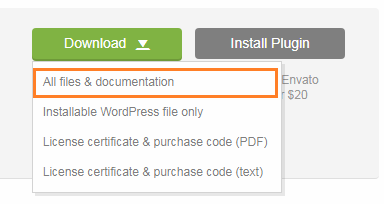
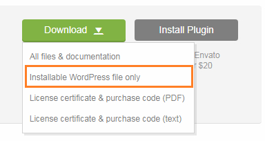

This section will gives you explanation on how to setup FAT Services Booking plugin.
Firstly, please make sure that you have downloaded FAT Services Booking files from your Themeforest account.
How to Install FAT Services Booking
If you have downloaded plugin package, please unzip it. There you will find plugin install file, documents, license folder

Download main file (include install file, documents, license folder).
Alternatively you can simply download the installable WordPress file.

Download installable file.
When you are ready to install plugin, you need upload plugin file and active then plugin. You can do it by two ways:
1. Upload by FTP
1. Unzip 'fat-services-booking.zip' file that you downloaded
2. Upload 'fat-event' plugin folder to "/wp-content / plugins/"in your hosting
3. Please go to Plugins » Installed Plugins and activate the installed plugin
2. WordPress Upload
1. Navigate to Plugins » Installed Plugins
2. Click Add New button and then hit Upload Plugin
3. Click Choose File and find 'fat-services-booking.zip' file on your computer and click
'Install Now' button
4. The plugin will be uploaded and installed
5. Go to Plugins » Installed Plugins and activate the installed plugin